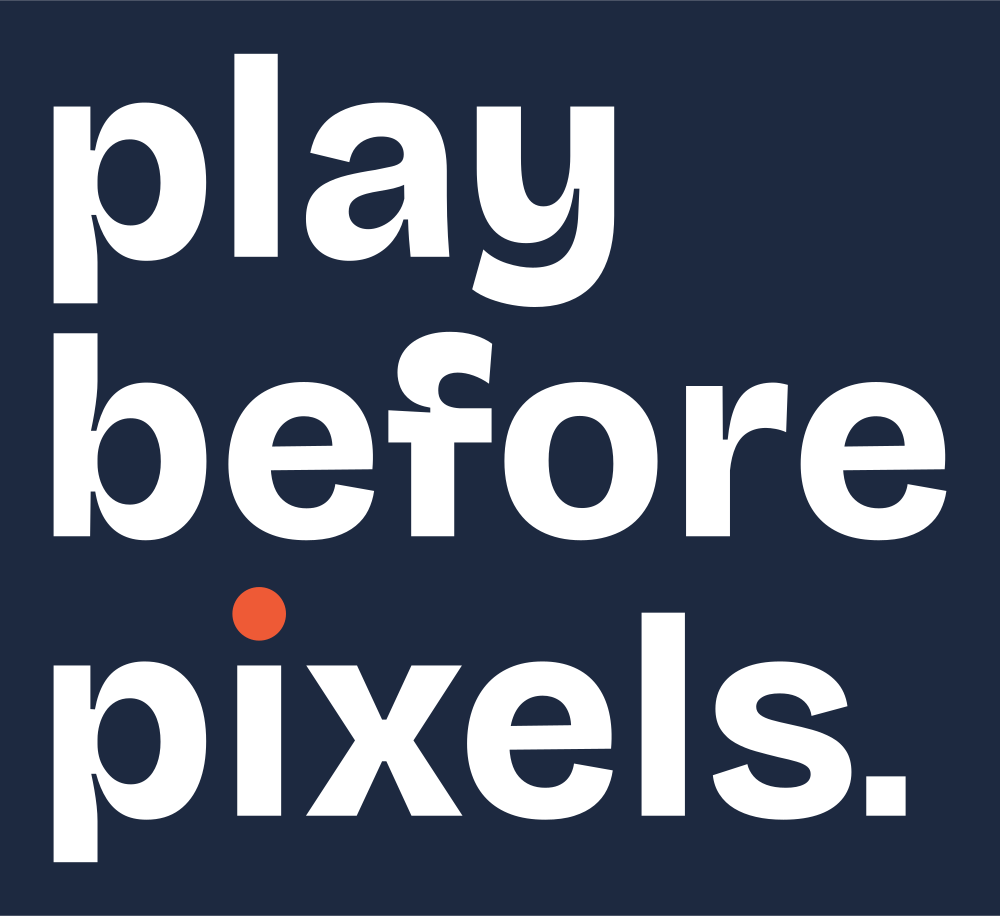
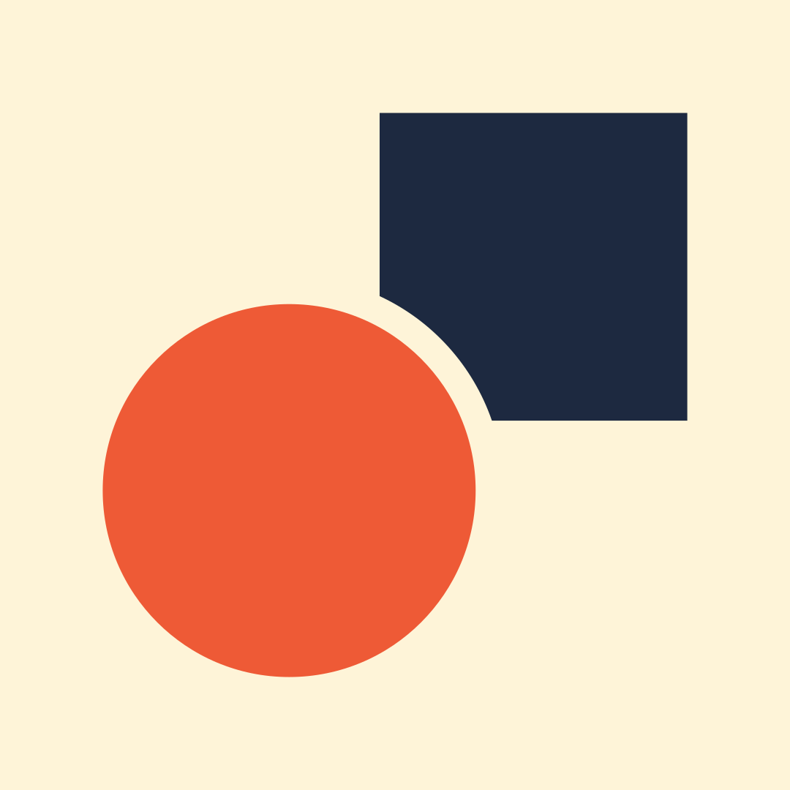
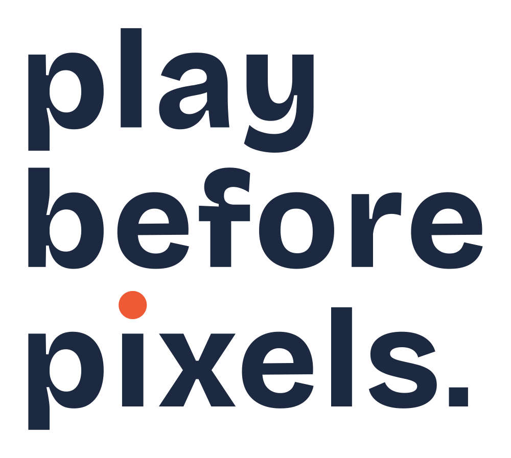
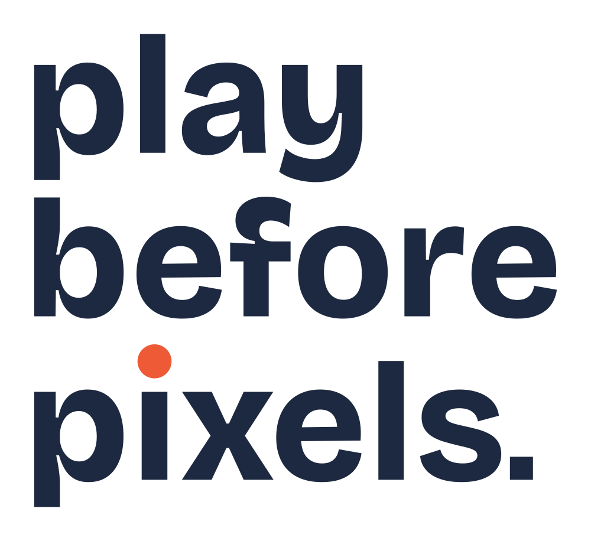

play before pixels. · concept A: the name is the logo
Lowercase drawn from Bricolage Grotesque outlines. The dot on the i is a ball, held in the air; the full stop is one square pixel. The symbol puts the same ball in front of the same pixel.
primary logo · site header

reversed · white on ink
small cut, 1.4 in wide
one colour · black

playbeforepixels
paper, talk and play for ages 0-12
Play Before Pixels
Play Before Pixels
social avatar · browser tabs, true size
Up! Go! More!

The Day the Tablet Slept

2× ZOOM
book spines · small cut, 0.5 in tall, true size

tote · embroidered in ink thread